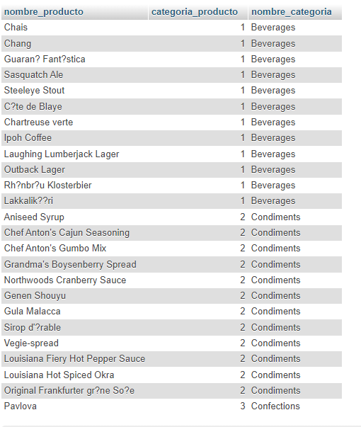

SELECT COUNT(*) AS cantidad_empleados, GROUP_CONCAT(employees.FirstName, ' ', employees.LastName) AS nombre_empleado
FROM employees
WHERE BirthDate BETWEEN '1900-01-01' AND '1950-12-31';
SELECT products.ProductName AS nombre_producto, products.CategoryID AS categoria_producto, categories.CategoryName AS nombre_categoria
FROM products
JOIN categories ON categories.CategoryID = products.CategoryID;
